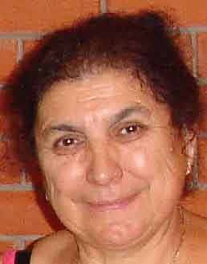

Азнаурьян Валентина.Род: Азнаурьяны
Возраст: 79
Место жительства: Краснодар
Отец: Азнаурьян Арменак Петросович
Мать: Азнаурьянц Астхик Галустовна
Брат: Азнаурьян Степан Арменакович
Муж: Померанцев Юрий Дмитриевич
Дочь: Дзиова (Азнаурьян) Екатерина Юрьевна
Дочь: Епрынцева (Азнаурьян) Эрна Юрьевна
Родилась: 14.09.1946.
Вышла замуж.
Родилась дочь: Дзиова (Азнаурьян) Екатерина Юрьевна, 14.07.1977.
Родилась дочь: Епрынцева (Азнаурьян) Эрна Юрьевна, 11.12.1981.